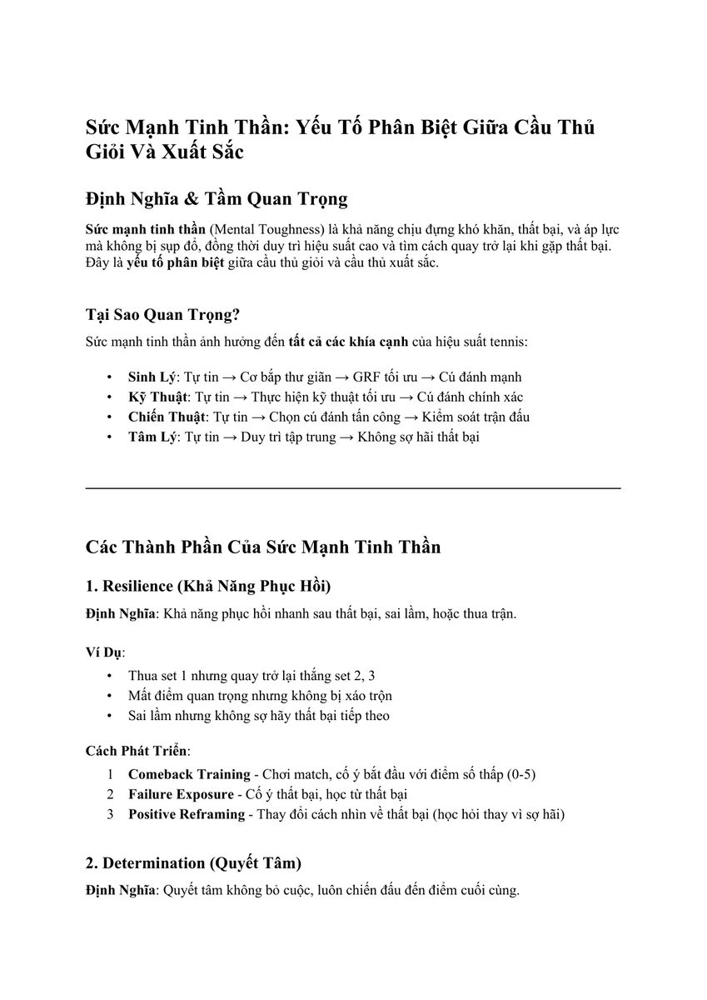
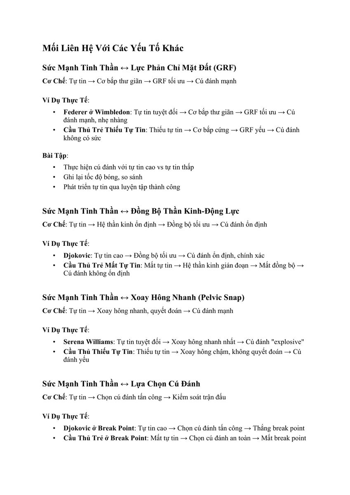

1. Sức Mạnh Tinh Thần: Nấc Thang Phân Định Đẳng Cấp
Sức mạnh tinh thần (Mental Toughness) không phải là sự lì lợm mù quáng hay thái độ gắt gỏng trên sân đấu. Trong khoa học thể thao đỉnh cao, sức mạnh tinh thần được định nghĩa là năng lực duy trì sự kiên định, lòng tự tin và hiệu suất thi đấu tối ưu bất chấp khó khăn, nghịch cảnh và áp lực đè nặng.
Hàng ngàn tay vợt sở hữu cú thuận tay sấm sét và quả giao bóng trên 200 km/h tại các học viện quần vợt khắp thế giới, nhưng chỉ có chưa đầy 1% trong số họ bước lên bục vinh quang Grand Slam. Điểm khác biệt sống còn nằm ở sức mạnh tinh thần — chiếc chìa khóa duy nhất giúp vận động viên đứng vững khi mọi thứ đang chống lại mình.

Hình 1: Bốn trụ cột của Sức mạnh Tinh thần (Four Pillars of Mental Toughness). Sự kết hợp giữa khả năng phục hồi thần tốc, lòng quyết tâm sắt đá, sự tự tin nội tại và sự tập trung vào hiện tại.2. Bốn Trụ Cột Cốt Lõi Của Sức Mạnh Tinh Thần
Sức mạnh tinh thần được xây dựng từ bốn phẩm chất tâm lý cấu thành:
- Khả năng phục hồi nghịch cảnh (Resilience): Năng lực bật dậy ngay lập tức sau một cú đánh hỏng ngớ ngẩn, một pha bóng bị trọng tài xử ép hoặc sau khi để thua trắng set đầu tiên 0-6. Người có resilience cao coi thất bại là dữ liệu để học hỏi thay vì bản án phán quyết năng lực.
- Lòng quyết tâm kiên định (Determination): Ý chí chiến đấu không khoan nhượng cho đến điểm số cuối cùng. Cho dù tỷ số đang là 0-5 và 0-40, họ vẫn chạy hết tốc lực để cứu một đường bóng ngắn sát lưới.
- Sự tự tin nội tại (Internal Confidence): Niềm tin vững chắc vào năng lực và quá trình khổ luyện của bản thân, không bị lung lay bởi danh tiếng của đối thủ hay tiếng la ó của khán giả trên khán đài.
- Sự tập trung vào hiện tại (Laser Focus): Khả năng neo chặt tâm trí vào quả bóng và điểm số hiện tại, xóa bỏ hoàn toàn những tiếc nuối về điểm số trong quá khứ và những lo âu về kết quả trong tương lai.

Hình 2: Mối liên hệ giữa Sức mạnh Tinh thần và Cơ sinh học. Sự tự tin giúp các nhóm cơ đối kháng thả lỏng, cho phép bàn chân nén sâu xuống mặt sân để khai thác tối đa Lực Phản Hồi Mặt Đất (GRF).3. Mối Liên Hệ Trực Tiếp Với Lực Phản Hồi Mặt Đất (GRF)
Khoa học vận động hiện đại chứng minh rằng sức mạnh tinh thần tác động trực tiếp lên cơ sinh học thông qua cơ chế sau:
Cơ Chế: Tự Tin → Cơ Bắp Đàn Hồi → GRF Tối Ưu → Cú Đánh Hủy Diệt
Khi tay vợt sở hữu sức mạnh tinh thần cao, họ không cảm thấy sợ hãi. Hệ thần kinh không gửi tín hiệu gồng cứng đến các cơ bắp đối kháng (antagonist muscles). Cơ bắp duy trì trạng thái thả lỏng đàn hồi tối ưu, cho phép hai đầu gối khuỵu sâu, bàn chân cắm chặt và nén mạnh xuống mặt sân. Lực Phản Hồi Mặt Đất (GRF) được giải phóng 100% qua chuỗi động học, tạo ra cú đánh có tốc độ và vòng xoáy hủy diệt.